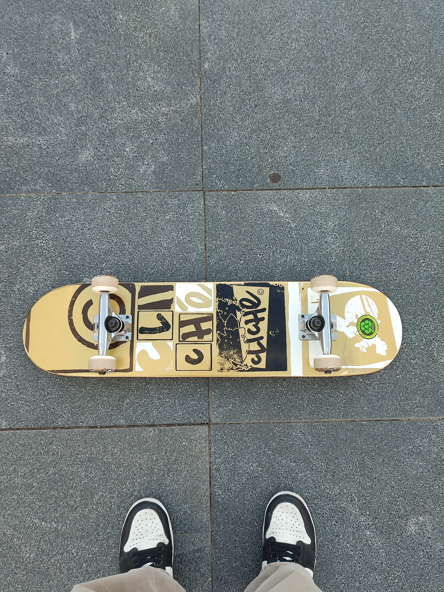

Ben Ataberk. 2004 yılında 18 martta Bafra'da doğdum. Ailedeki iki kardeşten küçük olanıyım. Annemin adı Cemile ve biyoloji öğretmenidir. Babamın adı ise Mehmet ve o da fizik öğretmenidir. Lise zamanlarımda gençlik merkezlerinde kodlamalar ile uğraşmıştım. Bilgisayar mühendisliği seçmemdeki en büyük rol ordaki öğrendiklerim oldu. Hayatımın uzun bir bölümü Sinop ve Samsun'da geçti. Şuan ise Sakarya'da tek başıma evde kalıyorum